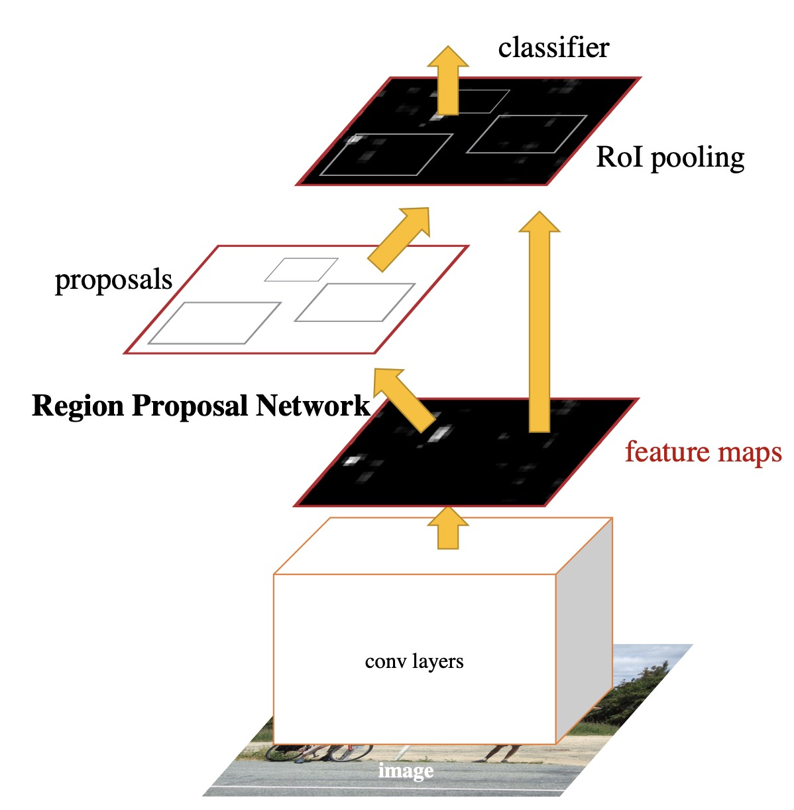
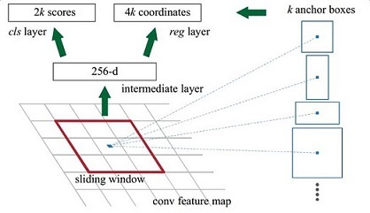
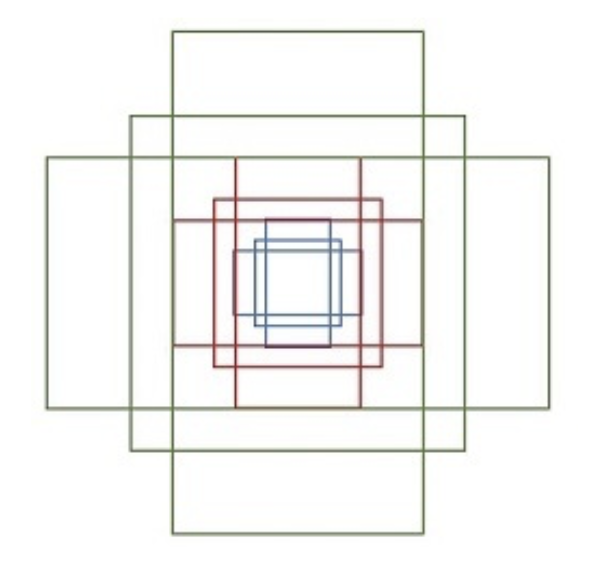
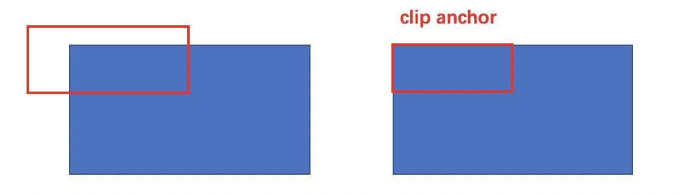

关于作者
关于作者
Faster RCNN
Fast RCNN是对RCNN的后半段进行改进，而Faster RCNN是要对RCNN的前半段进行改进。 它不再需要使用选择性搜索等算法来生成候选区域，而是使用 RPN 网络直接生成候选区域，从而大大提高了算法的速度和准确率。
整体架构
网络的整体架构如下图所示：

1、特征提取。Faster RCNN首先使用一组基础的conv+relu+pooling层提取image的feature maps。该feature maps被共享用于后续RPN层和全连接层。
2、Region Proposal Networks。RPN网络用于生成region proposals。该层通过softmax判断anchors属于positive或者negative，再利用bounding box regression修正anchors获得精确的proposals。
3、Roi Pooling。该层收集输入的特征图和提议框，综合这些信息后提取proposal feature maps，送入后续全连接层判定目标类别。
4、分类回归。利用proposal feature maps计算proposal的类别，同时再次bounding box regression获得检测框最终的精确位置。
总的来说，除了RPN替代了SS，其他和Fast RCNN一模一样，所以会主要讲解RPN部分。
特征提取
网络使用13个conv层+13个relu层+4个pooling层，将输入(M * N)的图像转为(M/16 * N/16)的特征图。
RPN

图示其实不太容易理解，我们可以将RPN简单分为三步
1、使用3*3卷积得到一个256层的特征图，尺寸为(M/16 * N/16)。
2、将步骤1的特征图分别得到分类层和回归层。
3、用Proposal Layer将分类与回归信息融合筛选得到用于训练的anchor。
接下来细讲步骤2和3。
anchor
步骤1得到了尺寸为(M/16 * N/16)的特征图，然后会对每个点生成k个anchor，k一般为9。9个anchor包含3种尺度，W:H = {1:2, 1:1, 2:1}共3种比例。 具体为
[[ -84. -40. 99. 55.]
[-176. -88. 191. 103.]
[-360. -184. 375. 199.]
[ -56. -56. 71. 71.]
[-120. -120. 135. 135.]
[-248. -248. 263. 263.]
[ -36. -80. 51. 95.]
[ -80. -168. 95. 183.]
[-168. -344. 183. 359.]]
这是预先定义好的，如果显式可见的话如下图所示

通过该方法可以生成(M/16 * N/16 * 9)个候选框，足以覆盖图中的绝大多数目标。
分类层和回归层
现在特征图每个点上有k=9个候选框，然后分类层要将每个anhcor要分positive和negative，所以该层输出通道为cls=2•k 的特征图； 而每个anchor都有对应4个偏移量，所以回归层输出通道为 reg=4•k 的特征图。
Proposal Layer
Proposal Layer负责综合所有变换量和positive anchors，计算出精准的proposal，送入后续RoI Pooling Layer。
该层接受三个输入： 1）rpn_cls_prob_reshape： 分类器对positive vs negative anchors的分类结果。 2）rpn_bbox_pred：边界框回归的输出。 3）im_info: 对于一副任意大小PxQ图像，传入Faster RCNN前首先reshape到固定MxN，im_info=[M, N, scale_factor]则保存了此次缩放的所有信息。
Proposal Layer处理流程如下： 1）生成修正位置后的anchors。利用 对所有的anchors做bbox regression回归。 2）提取修正位置后的positive anchors。 照输入的positive softmax scores由大到小排序anchors，提取前N个。 3）限定边框。对超出图像边界的anchor更新其为图像边界，具体如下图所示。

4)剔除尺寸非常小的positive anchors。 5）对剩余的positive anchors进行NMS。 6）输出proposal=[x1, y1, x2, y2]，用于后续RoI。
注意，由于在第三步中将anchors映射回原图判断是否超出边界，所以这里输出的proposal是对应MxN输入图像尺度的。
总的来说在 Faster R-CNN 中，区域提议网络（RPN）负责生成候选区域， Fast R-CNN 负责对每个候选区域进行分类和回归。 RPN 网络和 Fast R-CNN 网络都是深度卷积神经网络，但它们的结构和目标不同。
R-CNN系列的双阶段检测可以质量很高的检测结果，但随着深度学习的发展，其复杂性及推理的耗时变得不可接受，单阶段的端到端检测在不断演进中准确率也在不断提升，成为检测的主力。
参考
https://zhuanlan.zhihu.com/p/31426458 https://arxiv.org/pdf/1504.08083.pdf